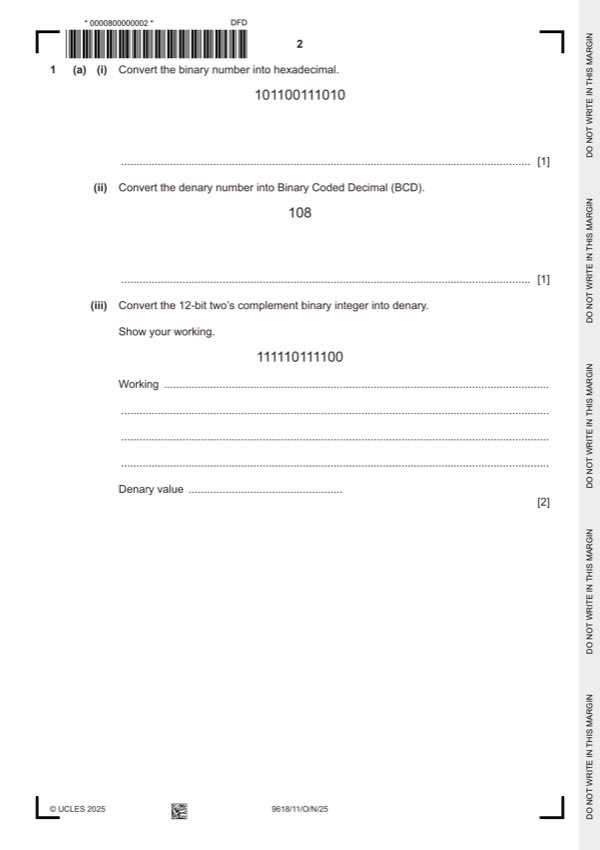
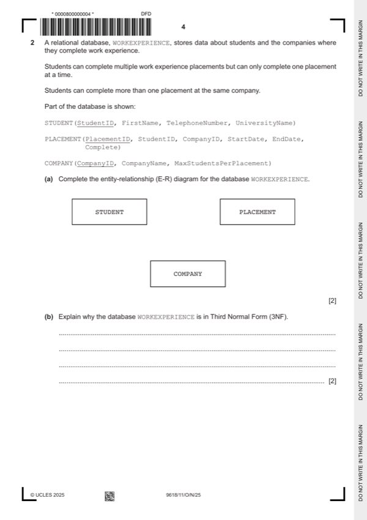
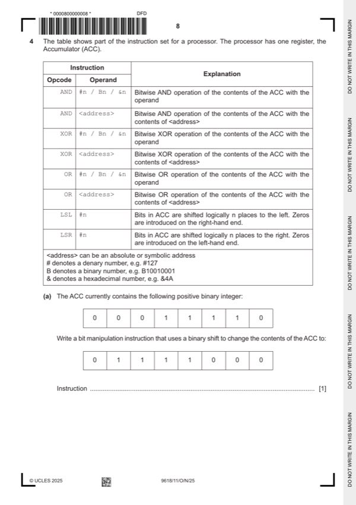
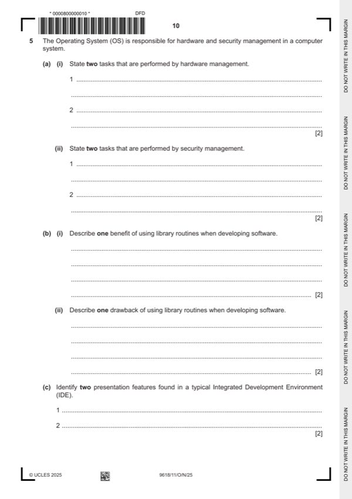
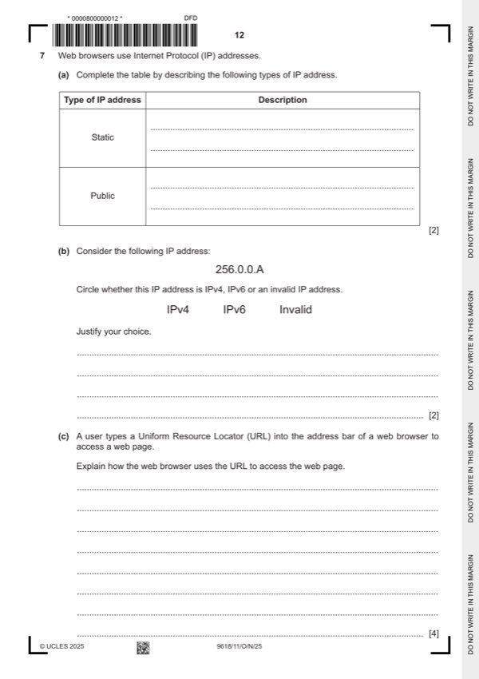
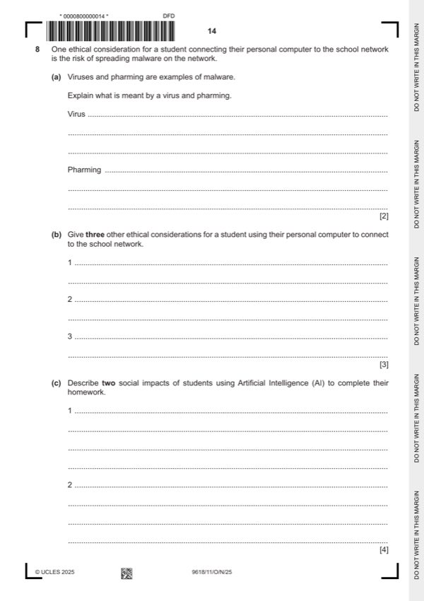

Question 0
Part 0 — solution
0 1 0 0 0 1 1
Mark points
- Include the ideas shown in the solution above.
Step-by-step solutions based on the mark scheme (not a mark-scheme dump).
Part 0 — solution

Part 1(a)(i) — solution
Answer: B3A 1
Part 1(a)(ii) — solution
Part 1(a)(iii) — solution
Part 1 — solution
Part 1(b)(i) — solution
Part 1(b)(ii) — solution
Part 1 — solution
Part 1 — solution

Part 2(a) — solution
Part 2(b) — solution
Part 2(c)(i) — solution
Part 2(c)(ii) — solution
Answer: AND StudentID = "LDEA01" · AND Complete = TRUE;
Part 2(d) — solution
Part 3(a) — solution
Part 3(b) — solution

Part 4(a) — solution
Part 4(b) — solution

Part 5(a)(i) — solution
Part 5(a)(ii) — solution
Part 5(b)(i) — solution
Part 5(b)(ii) — solution
Part 5(c) — solution
Part 6(a) — solution
Part 6(b) — solution
Part 6(c) — solution

Part 7(a) — solution
Part 7(b) — solution
Part 7(c) — solution
Part 7(d)(i) — solution
Part 7(d)(ii) — solution
Part 7(d)(iii) — solution

Part 8(a) — solution
Part 8(b) — solution
Part 8(c) — solution
Part 9 — solution
Part 10(a) — solution
Part 10(b) — solution